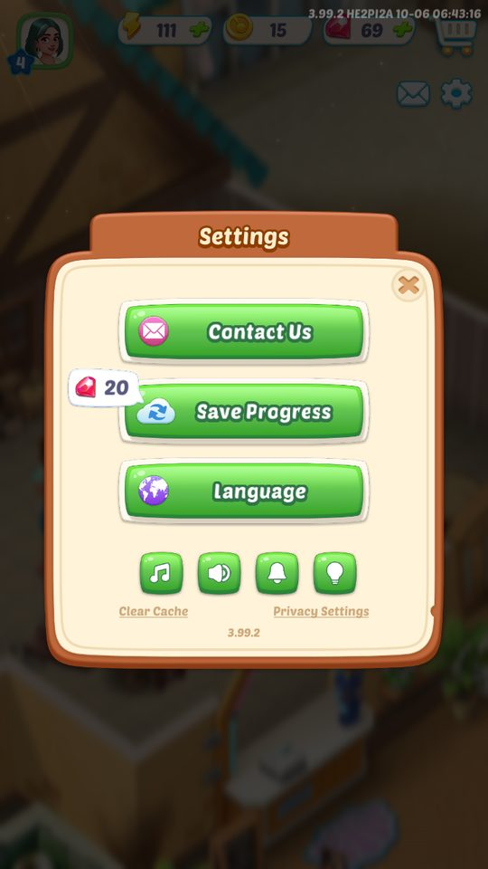
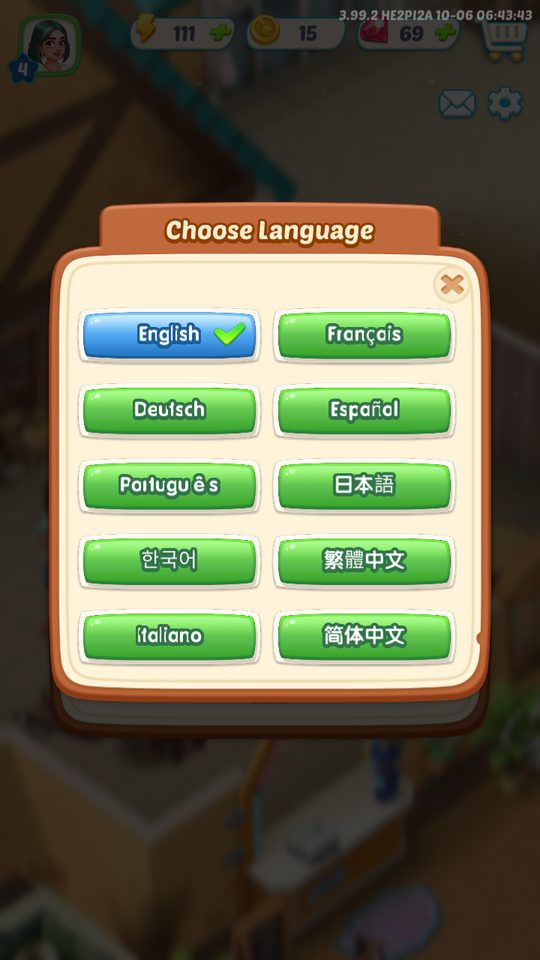
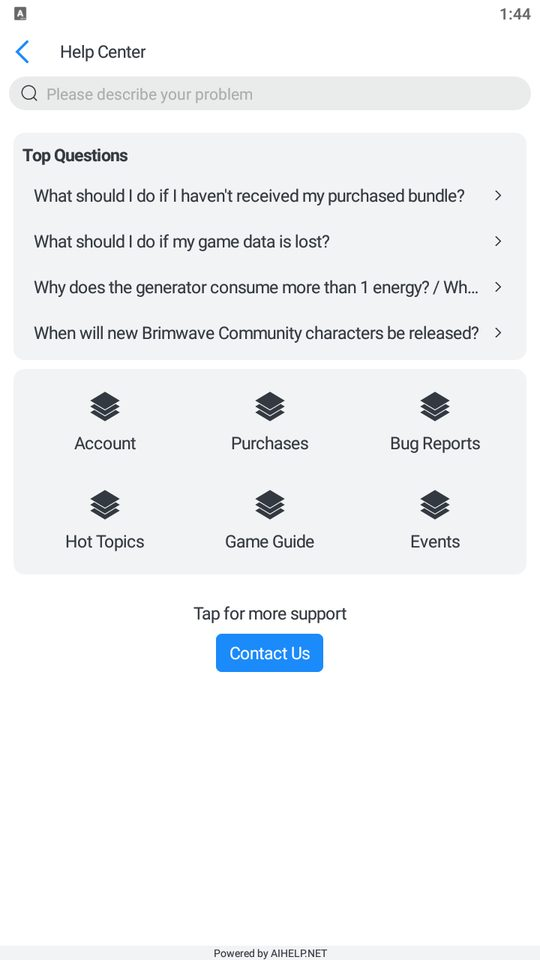
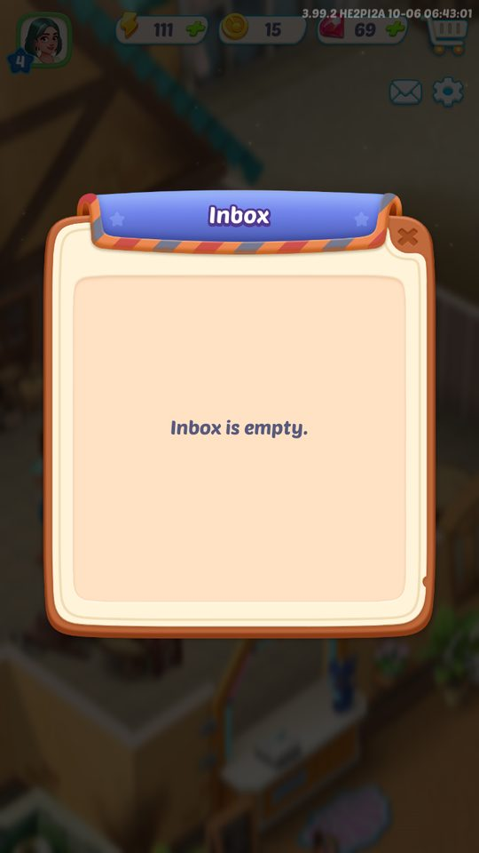
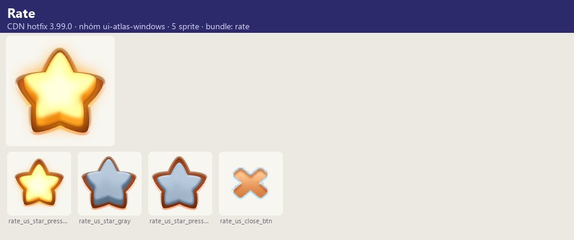
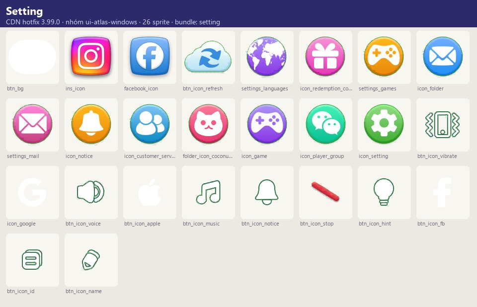
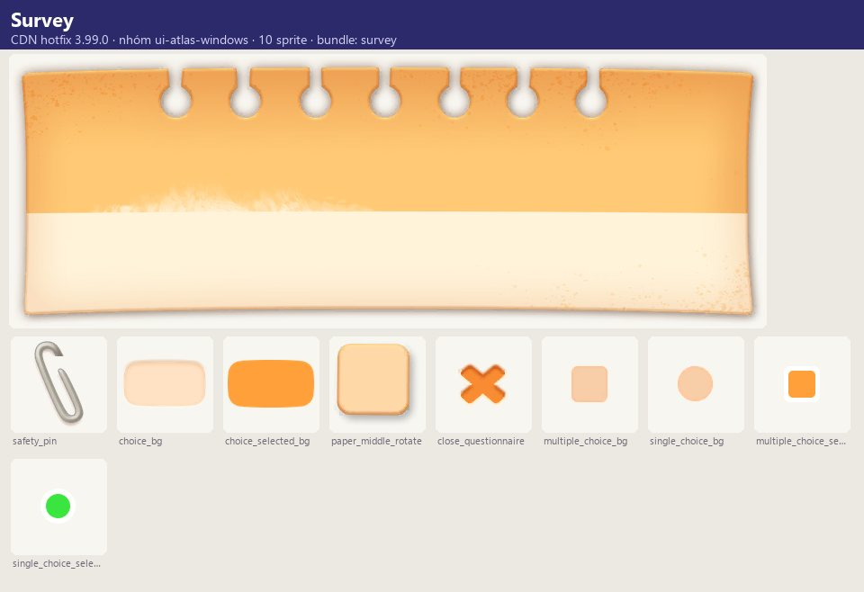
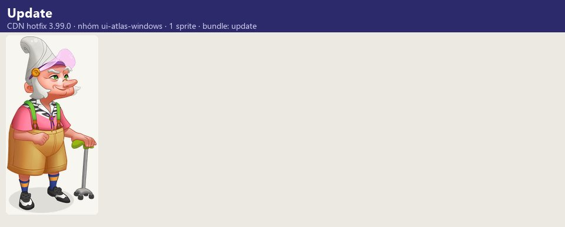

Ảnh chụp & tài nguyên
Cài đặt gồm: âm nhạc/âm thanh, thông báo, gợi ý merge (Hint), lưu tiến trình (liên kết tài khoản), ngôn ngữ (11 ngôn ngữ, đổi cần khởi động lại), xóa cache,…
Mô tả
- Cài đặt gồm: âm nhạc/âm thanh, thông báo, gợi ý merge (Hint), lưu tiến trình (liên kết tài khoản), ngôn ngữ (11 ngôn ngữ, đổi cần khởi động lại), xóa cache, quyền riêng tư (chính sách, điều khoản, hướng dẫn trẻ em, thiết lập quyền), Player id và phiên bản game, Contact Us (AIHelp — chat/FAQ hỗ trợ), More Games (chéo-quảng bá game khác của Microfun với nhiệm vụ nhận thưởng), Rate Us, Follow Us, hộp thư (Inbox với hạn), khảo sát nhiều dạng câu hỏi và mã quà (Redemption).
Còn thiếu / chưa xác minh
Mở khóa & điểm vào
Có từ đầu.
Điểm vào:
- Nút Settings trên HUD
- Nút hỗ trợ trên màn tải (icon_connectus)
- Popup Rate/Survey/Inbox
Cách hoạt động
- SettingWindow hiển thị các công tắc ON/OFF (Music, Sound, Notifications, Hint), Save Progress (→ Account), Language (→ LanguageSettingWindow, xác nhận 'The game will restart'), Clear Cache, Privacy Settings, Contact Us (AIHelp mở phiên chat/FAQ, gửi kèm thông tin thiết bị/người dùng), More Games (CrossPromotionWindow: nhiệm vụ trong game khác như vào game, xây công trình đầu, mở nhân vật, lên cấp → Claim thưởng), Player id/Game version.
- Hộp thư (MailDataWindow) chứa thư có hạn.
- Khảo sát (SurveyWindow) với các dạng: điền trống, một/nhiều lựa chọn, có ảnh; giới hạn số lựa chọn.
- Rate Us mời đánh giá; RateContactWindow cho phản hồi.
Luồng chi tiết theo code
SettingWindow hiển thị các công tắc ON/OFF (Music, Sound, Notifications, Hint), Save Progress (→ Account), Language (→ LanguageSettingWindow, xác nhận 'The game will restart'), Clear Cache, Privacy Settings, Contact Us (AIHelp mở phiên chat/FAQ, gửi kèm thông tin thiết bị/người dùng), More Games (CrossPromotionWindow: nhiệm vụ trong game khác như vào game, xây công trình đầu, mở nhân vật, lên cấp → Claim thưởng), Player id/Game version. Hộp thư (MailDataWindow) chứa thư có hạn. Khảo sát (SurveyWindow) với các dạng: điền trống, một/nhiều lựa chọn, có ảnh; giới hạn số lựa chọn. Rate Us mời đánh giá; RateContactWindow cho phản hồi.
Ảnh chụp & tài nguyên (10)
4 ảnh chụp trong game (BlueStacks/LDPlayer, tài khoản cấp 4); 2 ảnh tài nguyên trong APK; 4 bảng sprite trích từ bundle sự kiện trên CDN hotfix 3.99.0 (mỗi bảng là một chủ đề/biến thể; sprite rời, không phải màn hình đã dựng). Bấm ảnh để phóng to; nhãn UC dẫn tới use case tương ứng.

















Số liệu chính
| Chỉ số | Giá trị | Nguồn |
|---|---|---|
| Phiên bản hiển thị | 3.99.2 (nội dung hotfix) | Phiên bản hiển thị — screens/manifest.json |
Use case (8)
Bấm vào từng use case để mở. Mở/đóng tất cả
UC-01 Chỉnh âm thanh/thông báo/gợi ý
Các bước- Bật/tắt Music, Sound, Notifications, Hint
| Actor | Player |
|---|---|
| Trigger | Settings |
| Điều kiện | — |
| Kết quả | Thiết lập lưu |
| Quy tắc / số liệu | Tắt Hint → 'Merge hint is turned off.' |
| Evidence | text settings_*, merge_hint_* |
UC-02 Đổi ngôn ngữ
Các bước- Chọn ngôn ngữ
- Xác nhận khởi động lại
| Actor | Player |
|---|---|
| Trigger | Language |
| Điều kiện | — |
| Kết quả | Game khởi động lại với ngôn ngữ mới |
| Quy tắc / số liệu | 10 ngôn ngữ trong màn chọn: English, Français, Deutsch, Español, Português, 日本語, 한국어, 繁體中文, Italiano, 简体中文 (không có tiếng Nga dù có khóa language_ru_button) |
| Evidence | text language_*; LocalizationModel.InitLanguage/TryUpdateLanguage; Assets/Text/GameText/game_text_*.json |
UC-03 Liên hệ hỗ trợ
Các bước- Mở AIHelp
- Chat / FAQ
| Actor | Player |
|---|---|
| Trigger | Contact Us |
| Điều kiện | AIHelp đã khởi tạo |
| Kết quả | Gửi yêu cầu hỗ trợ |
| Quy tắc / số liệu | FAQ phân nhóm (runtime: 10 nhóm như 'Game Information', 'I have a suggestion') |
| Evidence | AIHelp.AIHelpSupport; files/AIHelp/*; log 'AiHelp Update Device/User/Group Info Finished' |
UC-04 Xóa cache
Các bước- Xóa tài nguyên tải về
| Actor | Player |
|---|---|
| Trigger | Clear Cache |
| Điều kiện | — |
| Kết quả | 'Clear Cache Completed' |
| Quy tắc / số liệu | — |
| Evidence | text title_clear_cache* |
UC-05 Chéo-quảng bá
Các bước- Cài game mới
- Hoàn thành nhiệm vụ trong game đó
- Claim thưởng
| Actor | Player |
|---|---|
| Trigger | More Games / CrossPromotion |
| Điều kiện | Cấp quyền (CrossPromotionPermissionWindow) |
| Kết quả | Thưởng chéo |
| Quy tắc / số liệu | Nhiệm vụ: enter, castle, character, level |
| Evidence | text cross_promotion_*; prefab CrossPromotion*, MoreGame* |
UC-06 Hộp thư
Các bước- Đọc thư
- Nhận đính kèm trước hạn
| Actor | Player |
|---|---|
| Trigger | Inbox |
| Điều kiện | — |
| Kết quả | Thưởng thư |
| Quy tắc / số liệu | 'Expires in {0}' |
| Evidence | text mail_window_*; prefab MailDataWindow |
UC-07 Khảo sát
Các bước- Trả lời câu hỏi
- Gửi
| Actor | Player |
|---|---|
| Trigger | Survey xuất hiện |
| Điều kiện | — |
| Kết quả | Có thể nhận thưởng |
| Quy tắc / số liệu | Giới hạn tối thiểu/tối đa lựa chọn |
| Evidence | text question_multiple_*; prefab Survey/* |
UC-08 Đánh giá
Các bước- Chọn sao
- Submit / liên hệ
| Actor | Player |
|---|---|
| Trigger | Rate Us |
| Điều kiện | — |
| Kết quả | Mở store hoặc gửi phản hồi |
| Quy tắc / số liệu | — |
| Evidence | text rate_us_*; prefab RateWindow, RateContactWindow |
Cấu hình (2)
Gộp mọi nguồn: const trong code, JSON mặc định trong Resources, bảng static, storage key, AB test, cờ server.
| Nguồn | Key | Kiểu | Giá trị | Ý nghĩa | Nơi định nghĩa |
|---|---|---|---|---|---|
| asset | Ngôn ngữ | list | cn, de, en, es, fr, it, jp, ko, pt, tw (10) | Assets/Text/GameText | |
| runtime (ảnh chụp BlueStacks 06/10/2026) | Phiên bản hiển thị | 3.99.2 (nội dung hotfix) | screens/manifest.json |
Backend / server
| Command | Chiều | Mục đích |
|---|---|---|
AIHelp | client↔AIHelp | Hỗ trợ khách hàng |
Giao diện (UI)
| Element | Class | Mục đích |
|---|---|---|
| Cài đặt | Prefabs/Window/SettingWindow, Setting/SettingWindowCN | |
| Khảo sát | Prefabs/Window/Survey/* | 11 biến thể |
Storage keys
misc local config
Chưa đọc được / ghi chú
- Nội dung khảo sát, thư và chéo-quảng bá do server
Tính năng liên quan
Tài khoản, đăng nhập & quyền riêng tư Thông báo đẩy Hồ sơ, avatar & khung Shop (Redemption)
Nguồn đã đọc
- notes/packs/SettingsSupport.md
- appendix/runtime.md
- screens/manifest.json (ảnh chụp)